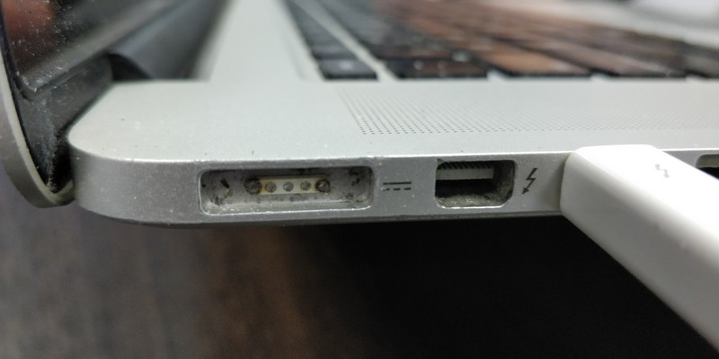
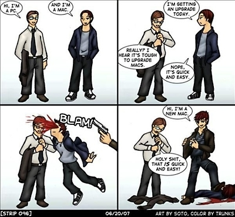
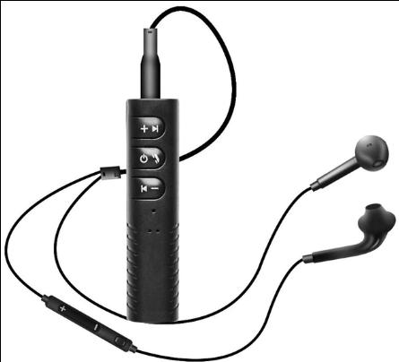

Немного про биткоины

Подкинули занятную ссылку на форум. Там описано, как украли 350 тысяч долларов. Оплачивать биткоинами что-то очень удобно, но оплатить ими подобную сумму без оформления нотариально заверенных документов - идиотизм редкостный на мой взгляд.
Меня вообще поражает то, как часто инфантилизм идёт рука об руку с желанием рискнуть большими суммами денег или вообще всем, что у тебя есть. А так же с нежеланием разобраться в механике тех процессов, в которые ты эти средства вкладываешь и хотя бы задуматься о том, что будет дальше, если что-то пойдёт не так, как ты задумал и события начнут развиваться не самым сказочно-прекрасным для тебя образом. Сколько таких людей, живущих в мире пони и радуг? Людей, не обладающих соответствующим образованием и уровнем подготовки и радостно сующих свой писюн в шестерёнки механизмов рынка ценных бумаг или криптовалют и ожидающих приятных ощущений? А потом боль и изумление - мол, как же это так произошло, ведь всё представлялось совсем не так?
После бума на росте курса биткоина, я видел множество сообщений на форумах и в соцсетях, когда курс обвалился. Выглядели они примено следующим образом: "Я тут квартиру заложил, продал машину, взял кредит, позанимал денег у знакомых, а курс обвалился! Что же мне теперь делать?" Вариант "подумать заранее" очевидно, не рассматривался в принципе. Самый шедевральный вариант выхода из сложившейся ситуации, который я видел на форумах, заключался в том, чтобы написать петицию (даже не было указано кому и куда) и собрать под ней подписи, чтобы курс биткоина вернули обратно. Сказочные идиоты! Я думаю, в соответствии с полузабытой советской традицией нужно было написать в спортлото. Там точно помогут.
Теги: мысли-вслух, идиоты
Про очередное подгорание и чёрную магию яблочной компании
Другие части эпопеи можно найти тут.

 Думаете, у меня подгорает нижняя чакра? Не угадали. Подгорает, но у макбука. Порт зарядки. MagSafe2. Контакты обуглились. Слово Safe в названии как бы намекает, что обугливающиеся контакты и разъём, нагревающийся до 80+ градусов цельсия при зарядке - это безопасно. Наверное контакты обугливаются безопаснее в 2 раза по сравнению с предыдущим MagSafe. К слову, переходник с MagSafe на MagSafe2 стоит около тысячи рублей (не напрягаясь можно найти за полторы). Кусочек алюминия с четырьмя медными контактами и магнитиком. Адаптер этот весит примерно около 20-25 грамм. Вес одного грамма серербра сегодня составляет около 110 рублей за грамм. Одним словом, под видом адаптеров питания продаётся алюминий и медь по цене в половину цены серебра. Отличный способ экстремально дорого продавать самый распространённый на земле металл! Мне кажется, я в своей жизни занимаюсь чем-то не тем. Разъём для макбука с заменой (кусочек текстолита, четыре медных контакта, кусок металла, немного проводов и пластиковый коннектор - это три с половиной тысячи рублей. Три года ноутбуку, а в него уже вложено 1500 за профилактику + 7500 замена батареи + 3500 за разъём. Итого 12 тысяч рублей. Ноутбук, на котором я работаю дома последние полтора года, стоил мне чуть больше 12 тысяч рублей.
Теги: mac
Засыпатор 9000
 Однажды я уже писал про то, какими методами и устройствами я пользуюсь для того, чтобы легче заснуть, поэтому буду краток. Дело в том, что под монотонный бубнёж или какую-нибудь лекцию мне заснуть легче, чем в полной тишине, потому как это вытесняет собственные мысли. Недавно я нашёл устройство, которое для этих целей подходит больше и, что удивительно, стОит при этом в десять с лишним раз дешевле, чем какой-нибудь плеер. Это bluetooth гарнитура, её цена составляет немногим менее 2х долларов и при этом гарнитура несёт на борту bluetooth четвёртой версии. На последнее я честно говоря, совершенно не рассчитывал за такую сумму и был приятно удивлён.
Теги: сон
Кунсткамера древесностружечной промышленности или ЛДСП неадекватность
 Когда я учился в 10м классе школы, то, что выполняло роль моего компьютерного стола понадобилось заменить чем-то более приличным. Неприличное же когда-то собрал мой дед в свойственной ему манере - из гуано и веточек, причём гуано было не высшего сорта, а веточки трещали под нагрузкой, грозя вернуться в исходное агрегатное состояние под названием "строительный мусор". Выглядело это соответственно и решительно не выдерживало ни критики, ни массы компьютерного железа, которая к тому моменту в моей комнате накопилась.
Когда я учился в 10м классе школы, то, что выполняло роль моего компьютерного стола понадобилось заменить чем-то более приличным. Неприличное же когда-то собрал мой дед в свойственной ему манере - из гуано и веточек, причём гуано было не высшего сорта, а веточки трещали под нагрузкой, грозя вернуться в исходное агрегатное состояние под названием "строительный мусор". Выглядело это соответственно и решительно не выдерживало ни критики, ни массы компьютерного железа, которая к тому моменту в моей комнате накопилась.
На дворе стоял линолеум миллениум, мы ходили с мамой по конторам, занимающимся продажей мебели, и искали подходящий экземпляр класса "компьютерный стол". Тогда я понял, что проектируют подобную мебель по всей видимости инопланетяне, выращенные в закрытых подземных лабораториях из пробирок каким-то злым гением. В силу своего ограниченного кругозора они не имели представления ни о том, что такое компьютер, ни о комфорте работы, ни об анатомии человека в целом.
Теги: ностальгия, diy
Мифы народов Южной Америки
Когда я вспоминаю события 15-ти летней давности, из своей учёбы в университете, я крайне редко вспоминаю сами занятия, только если на них не происходило чего-то из ряда вон выходящего. Чаще в памяти всплывают образы одногруппников и однокурсников, общение с ними, дни рождения, походы в студклуб и тому подобное. Но вот один период я запомнил достаточно хорошо, потому что фактически я пропустил целый день занятий, при этом присутствуя на них. Мы с другом взахлёб читали "Мифы народов Южной Америки". Мы не могли оторваться и периодически зажимали рты руками, чтобы не скатиться в гомерический хохот.
Теги: ностальгия, fun
Про очистку воды, вампиров, собак, ножи, цыган и наследство

Казалось бы, что общего между всеми понятиями, приведёнными в заголовке? Ответ очень прост - они все различными путями могут лишить вас денег. Интернет теперь доступен повсеместно, каждый знает, что такое google, практически у каждого человека есть возможность получить любую информацию с минимальными (я бы даже сказал минимальнейшими) усилиями. Причём не только ту информацию, которая раньше поступала из средств массовой информации и которая была доступна в библиотеках, но и ту, которую активно генерирует сам социум. Если раньше до нас доходили какие-то слухи, то сейчас любой может зайти на любой тематический форум и выложить всё, о чём он думает, описать всё, что с ним произошло и поделиться любым опытом с достаточно широким кругом лиц. Всё это индексируется поисковыми системами и доступно для поиска.
В этих условиях мне уже давно кажется крайне странной одна вещь - схемы мошенничества, которые должны были естественным путём исчезнуть, как неприносящие дохода, цветут и пахнут! Как минимум, эти схемы должны были многократно усложниться, обрасти деталями, мутировать, эволюционировать - одним словом измениться, чтобы как можно сильнее отличаться от уже известных вариантов. Но нет, они как акулы или змеи, которые не изменились за последние несколько миллионов лет - живут и здравствуют.
Теги: жизненное, мысли-вслух
Про надёжность, часть N+2

В эфире наша традиционная рубрика о качестве железа Apple. Всё чаще меня посещают мысли о запланированном устаревании. Создаётся стойкое впечатление, что продукция Apple рассчитана на 2 - 3 года, после чего вы должны пойти в авторизованный сервис-центр и вложить какое-то количество денег в ремонт (который вероятно, влетит в копеечку), либо просто выбросить свой макбук, монитор или ещё что-то и купить новый. Ссылки на предыдущие посты серии приводить не буду, смотрите по тегу "mac".
С прошлого поста прошло 5 дней, за это время я столкнулся с некоторыми проблемами особенностями продукции Apple. Девушка, которой я выдал другой мак на замену (я писал об этом в одном из прошлых постов, попросила восстановить её заметки, там была некая важная информация.
Теги: mac
Про эволюцию хранения заметок.
Ко многим вещам, как и ко многому софту, которым я в текущий момент пользуюсь постоянно, меня приводил долгий эволюционно-эмпирический путь. Таким долгим путём прошли ножи, фонари, идут одноплатные компьютеры, домашний сервер, роутеры, клавиатуры, пульты дистанционного управления, множество скриптов и чёрт знает, что ещё. Сегодня я расскажу о том, как я решал проблему хранения заметок, а впоследствии - проблему иерархического хранения заметок.
Во времена школы всё было просто - записная книжка и ручка. Требований к записной книжке немного - удобные габариты, практичная обложка, да и всё пожалуй. Когда дело доходит до хранения заметок в виде данных, сразу появляется море хотелок и требований. И чтобы поиск работал и чтобы ссылки были (в том числе перекрёстные) и теги желательно и вложения и чтобы открывалось это везде и т.п.. Вполне можно проследить эволюцию подобных приложений по мере того, как я менял одно на другое.
Про надёжность, часть N+1

Похоже, повествование о надёжности маков превращается в санта-барбару. Я даже новую картинку рисовать не буду, пусть это фекалояблоко остаётся логотипом - довольно неплохо отражает суть. Ссылки на предыдущие части тут и тут.
Прошло 11 дней. У макбука разработчика, которому вернул машину в конце предыдущей эпопеи, отвалиась ножка. Это для маков тоже нормально - они ноги откидывают постоянно, у нас есть целый пакет сменных ножек для маков в кладовке. Но конечно же, на более новых макбуках ножки отличаются от старых и похоже, нужно заводить ещё один пакет. Вот в чём вообще должна быть существенная причина, чтобы сменить одни ножки на другие? Кстати, винты на маках тоже изменились. Сначала были под крестовой шлиц, потом под торкс, теперь на новых шлиц похож на торкс, но с пятью вершинами - звезда. Полная звезда, когда тебе нужно этот мак открыть. Пришлось искать и добывать соответствующую отвёртку, чтобы всегда была под рукой в хозяйстве. Надо сказать, что когда в сервисе меняют самовыкрутившиеся винтики (да-да, маки и винтики теряют только в путь) на старых ноутбуках - тоже ставят "звездатые", чтобы жизнь мёдом не казалась. Но это всё мелочи.
Далее одна из сотрудниц показала, что её мак попросил замены батереи. На удивление скромно попросил, без спецэффектов, даже не выдавив тачпад, не погнув алюминиевую крышку - это скорее исключение, нежели правило. Зато у второй возникла довольно интересная проблема.
Теги: mac
Запугивал ежей обнажённый филей.

Только что смотрел видео на канале "Амперки". Периодически там появляется интересная информация о каких-нибудь полезных модулях или проектах. Конечно, по большей части это реклама их продукции, но сделано креативно и зачастую с юмором. Например, понравился проект, когда они собирали зонд с датчиками и запускали в стратосферу. Канал в основном рассчитан на начинающих, кому хочется сделать что-то своими руками в области электроники и программирования, но всё-равно в последнем видео меня задела одна фраза: "Но непонятные на первый взгляд строчки кода всё ещё отпугивали потенциальных разработчиков". Если тебя отпугивают непонятные строчки кода, то ты кто угодно, но не разработчик, пусть даже и потенциальный. Строчки кода в тебе должны вызывать что угодно, но не испуг. Это всё-равно что суп, отпугивающий потенциального повара. Я вот не считаю себя разработчиком, но строчки кода меня почему-то не отпугивают, а зачастую и вызывают интерес.
Теги: мысли-вслух